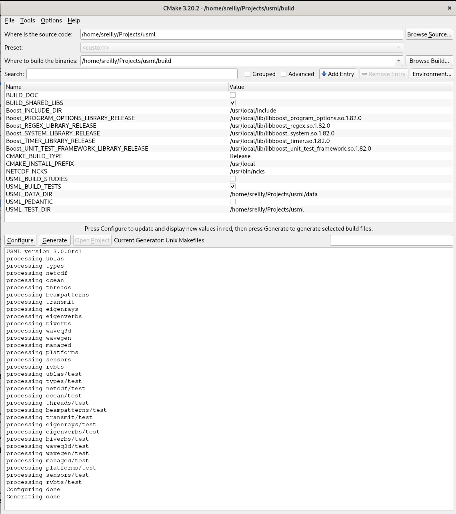

The Under Sea Modeling Library (USML) is a collection of C++ software development modules for sonar modeling and simulation. The Wavefront Queue 3D (WaveQ3D) model is the component of USML that computes acoustic transmission loss in the ocean using Hybrid Gaussian Beams in Spherical/Time Coordinates. At this time, most of the other modules provide support to WaveQ3D.
USML depends on the NetCDF package, for access to test data, and the Boost package, for fast computations (uBLAS) and unit test utilities. Correctly configuring these packages is the #1 problem reported by USML users.
The USML build process assumes that the software will be installed into a directory called usml
and it won't build properly if that is not the case. These instructions refer to usml
as the home directory. The directory that contains usml is refered to as
the parent directory. The header files, *.cc source, and tests for each module are found
in the subdirectories of usml. The #include statements in the code explicitly
rely on this directory structure. For example, if sreilly decides to install USML under
~/Projects on a Linux machine, the home directory would be
/home/sreilly/Projects/usml and the parent directory would be
/home/sreilly/Projects. Confusion over this scheme is the #2 problem reported by USML users.
Before you attempt to build and test USML, please read these instructions carefully. Good luck.
tar -xzf usml-src-#.#.#.tar.gz
tar -xzf usml-doc-#.#.#.tar.gz
tar -xzf usml-data-#.#.#.tar.gz
where #.#.# is the version number to be installed.
In this example, we'll extract them to ~/Projects, and this
creates a home directory called ~/Projects/usml
usml. If you are extracting the code from another
source, such as GitHub, make sure to rename the home directory usml.
sudo yum install epel-release (to add EPEL repository to yum config) sudo yum install cmake3-gui (to install CMake 3.6.3) sudo yum install netcdf-cxx-devel netcdf-devel nco (to install NetCDF C 4.3.3.1 and C++ 4.2) sudo yum install git-gui gitk (to install Git GUI 1.8.3.1 tools)
boost_1_66_0.tar.gz from
http://www.boost.org and the
install instructions from
http://www.boost.org/doc/libs/1_66_0/more/getting_started/unix-variants.html.
To install this software in /usr/local, these instructions boil down to:
cd /usr/local
tar -xvf distrib/boost_1_66_0.tar.gz
cd boost_1_66_0
./bootstrap.sh (to configure gcc options)
./b2 (to compile Boost libraries for static and dynamic)
sudo ./b2 install (to install boost libraries)
operator/() in Boost versions prior to 1.58.
cmake-gui tool (example below), set the source directory to the home directory where you
installed the USML source code. As suggested above source code could go in ~/Projects/usml.
~/Projects/usml-build directory. Using a binary
directory that is not outside of the source tree is strictly optional.
Configure button to process the CMakeList file.
Select the Unix Makefile generator from the pop-up menu.
Configure button a second time, even if you have not changed any
options. Hit the Generate button to create makefiles for your system.
make utility from ~/Projects/usml-build directory to compile both
usml_test regression test in this directory should run without errors.
*** No errors detected if fully successful.
sudo make install to deploy into the directory defined by the
CMAKE_INSTALL_PREFIX, which defaults to
/usr/local.
<prefix>/include/usml
<prefix>/lib
<prefix>/lib/cmake/USML
sudo make uninstall will remove these files.

Advanced options to see all of the CMake variables for Eclipse.
CMAKE_ECLIPSE_GENERATE_SOURCE_PROJECT option.
~/Projects
tar -xzf usml-src-#.#.#.zip
tar -xzf usml-doc-#.#.#.zip
tar -xzf usml-data-#.#.#.zip
where #.#.# is the version number to be installed.
In this example, we extracted them to C:\Projects, and this
created a directory called C:\Projects\usml
usml. If you are extracting the code from another
source, such as GitHub, make sure to rename the home directory to usml.
cmake-3.11.0-rc1-win64-x64.msi,
from http://www.cmake.org/download.
C:\Program Files\CMake directory by default.
boost_1_66_0.tar.gz from
http://www.boost.org and the
install instructions from
http://www.boost.org/doc/libs/1_66_0/more/getting_started/unix-variants.html.
To install this software in /usr/local, these instructions boil down to:
cd \Projects\boost_1_66_0
bootstrap (to configure Visual Studio options)
b2 (to compile Boost static libraries for Release and Debug)
b2 install (to install boost libraries into C:\Boost)
netCDF4.6.0-NC4-DAP-64.exe from
http://www.unidata.ucar.edu/software/netcdf/docs/winbin.html
C:\Program Files\netCDF 4.6.0 directory by default.
-> Advanced system settings -> Environment Variables.
NETCDF_DIR=C:\Program Files\netCDF 4.6.0 or equivalent.
USML_DIR for the USML installation directory.
We used C:\local\usml to avoid permission problems installing libraries
into Program Files,
%BOOST_LIBRARY_DIR%;%NETCDF_DIR%\bin;%USML_DIR%\lib to the Path variable.
Where is the source code: to C:\Projects\usml.
Where to build the binaries: to C:\Projects\usml-build
to create an out-of-source build.
Configure button, select your version of Visual Studio.
Configuring done, hit Configure again, then Generate.
usml.sln, in the build directory, using Visual Studio
Rebuild Solution from Build menu.
usml_test target and select
Set as StartUp Project.
Start Without Debugging under the Debug menu.
*** No errors detected printed to screen.
Batch Build... under the Build menu.
Build checkbox next to the Debug
and Release versions of the INSTALL targets.
Build button to compile and deploy these
releases into the directory defined by the USML_DIR prefix.
<prefix>/include/usml
<prefix>/lib
<prefix>/CMake
uninstall target will remove these files.
CMakeLists.txt script that creates an USML
enabled executable called example from a notional file called example.cc.
cmake_minimum_required( VERSION 2.6 )
project( usml_example CXX )
find_package( USML 1.0 REQUIRED )
include_directories( ${USML_INCLUDES} )
add_executable( example example.cc )
target_link_libraries( example ${USML_LIBRARIES} )
In this example, the find_package command uses files called
USMLConfig.cmake and USMLUse.cmake to
configure the include and library files for USML, Boost, and NetCDF.
A file called USMLConfigVersion.cmake is used to check
the desired USML version against the installed version.